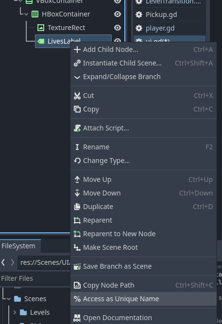
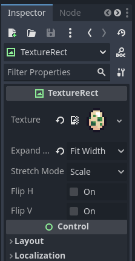

Limited Lives
IMPORTANT! This module requires the Hazard Setup, Global Script and UI modules to be completed first!
On this page we will help turn up the heat on our players by limiting the number of chances they get!
Scripting Player Lives
We need to track player lives, but we don't want the lives to be reset each time a player completes a stage. In order to work around this we will store the player's lives in our global script. We can do this quite simply by adding a new variable to the global script with some default number of starting lives.
var player_lives = 5Next, we need to update the number of lives the player has each time they die, and if they run out, reset the stage. We can do this by navigating to our player script and editing our die function like so:
func die():
Global.player_lives -= 1
if Global.player_lives <= 0:
get_tree().reload_current_scene()
Global.player_lives = 5
else:
global_position = respawn_pointAnd now they player has limited attempts! Of course, right now we cannot see how many lives we have left (nor when we reset.)
Adding Lives to the UI
To remedy the lack of information, we can add an element to our UI that shows our current lives. Before we can do that, we need to decide where we want to element to go. I want mine in the top left corner, and I want both a sprite of an egg and a number showing the number of lives left.
The placement of the elements are arbitrary, you can just as easily set it in any corner, top, bottom or even center if you wanted.
Go to your UI scene, then select the Left node. Create a new VBoxContainer node, then as a child of that a new HBoxContainer node. Next, select the new h-box container and add two children nodes: a TextureRect node and a Label node. Rename the label to LivesLabel, then the scene tree should look like this:

You may notice the % symbol next to the LivesLabel node. This means the node has a unique name, allowing it to be accessed anywhere in the tree, even if you end up changing it's parents or location. You can do the same by right clicking the LivesLabel node and selecting Access as Unique Name.
Next, let's attach a texture to our TextureRect node. Go ahead and open up the Limited Lives folder in your VGDC-2024 Assets folder, select the egg sprite you like and drag it into your file system. After that, select the TextureRect node and drag your egg sprite into the texture property in the inspector (if the egg looks slim in game, you can change the expand mode property to fit width.)
If you are not taking this course in person, you can download the assets Here
Finally, we can update the LivesLabel node with the player's lives. Open up your UI script (or attach a new one to the UI's canvas layer if you do not have one) and add the following line of code to it's _process function:
func _process(delta):
%LivesLabel.text = "x" + str(Global.player_lives)And that's all! You should see a new element on the UI that shows the player's current lives. Once you made sure it works, go ahead and move onto a new module!